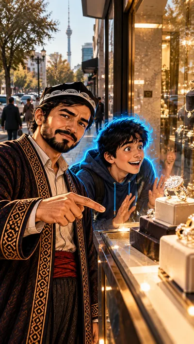

6-sahna — rasm, 9:16 (tik)
Close-up of hands and a typewriterChatGPT'ga biriktiring:

Ovoz
Usta (kadr ortidan): «1947-yil. Bitta shior yoziladi: ‘Olmos — abadiy’. Keyin bu asrning eng mashhur reklama shiori deb tan olindi.»
sepiagold
Vertical 9:16 image, Close-up of hands and a typewriter, shallow depth of field. Attach the style reference image (s01_namuna) and copy its style, light and colours exactly. This image shows no main characters. Scene: Late at night in a 1947 office: a woman's hands with a simple wristwatch type on an old black typewriter under a warm desk lamp; a sheet of paper in the typewriter shows one blurred line, not readable; a coffee cup and a small open ring box with a diamond ring on the desk. Only hands and sleeves are visible, no face. Every person has exactly two arms and two hands, five fingers on each hand, every hand clearly belongs to its own arm. Style: the same style as the attached style reference image: semi-realistic hand-painted cartoon illustration, an old 1930s-1940s photograph come to life: sepia and warm gold tones, soft film grain. Colour rule: the frame uses ONLY 2 main colours: old sepia brown and warm golden sunlight; everything else is soft neutral shadow. Vertical 9:16. No text, no letters, no numbers, no logos, no brand names, no watermark, no subtitles.